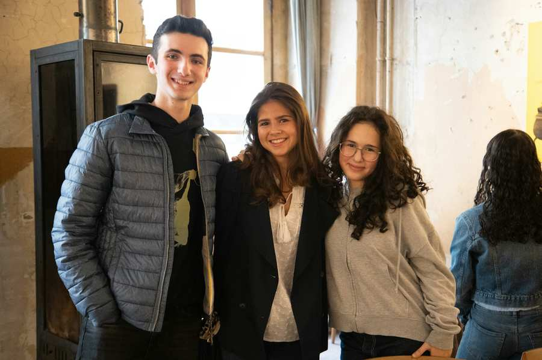
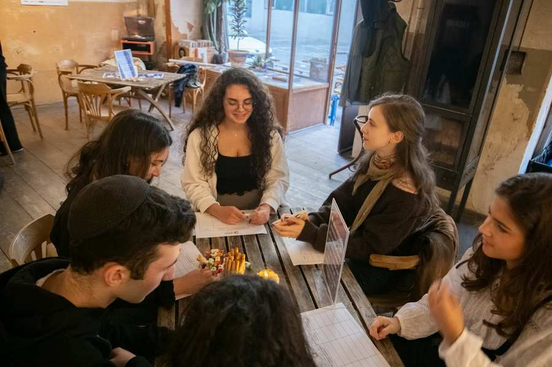
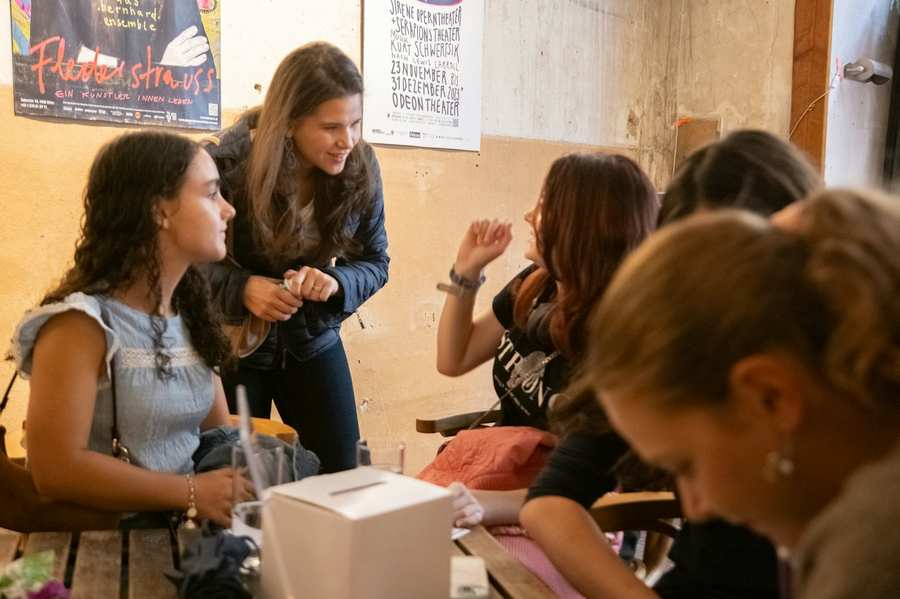
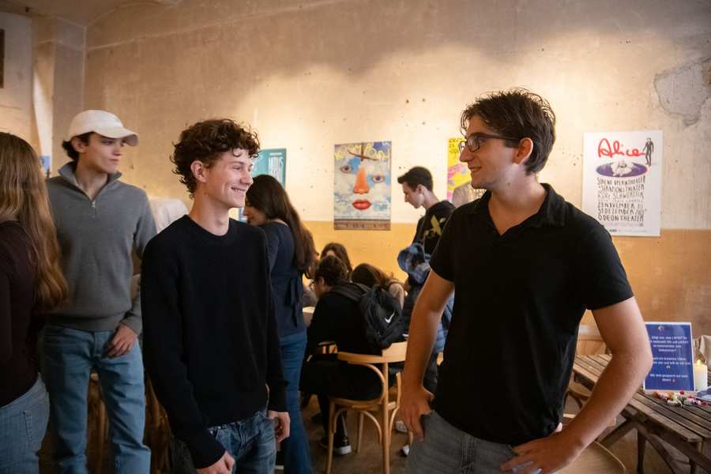
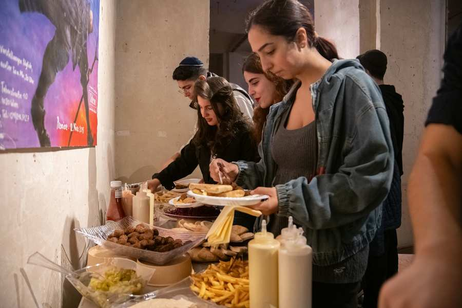
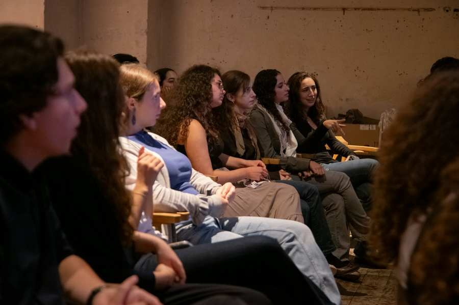
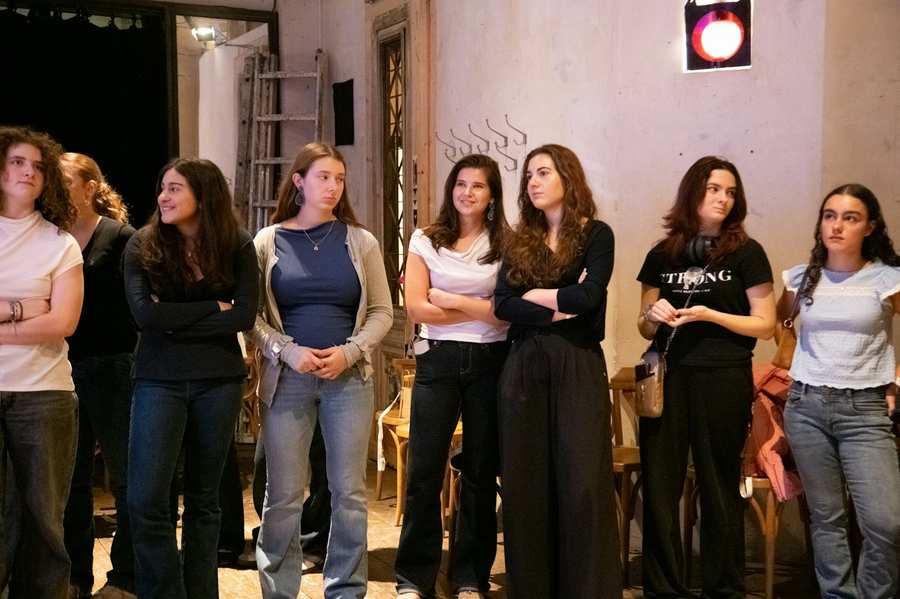
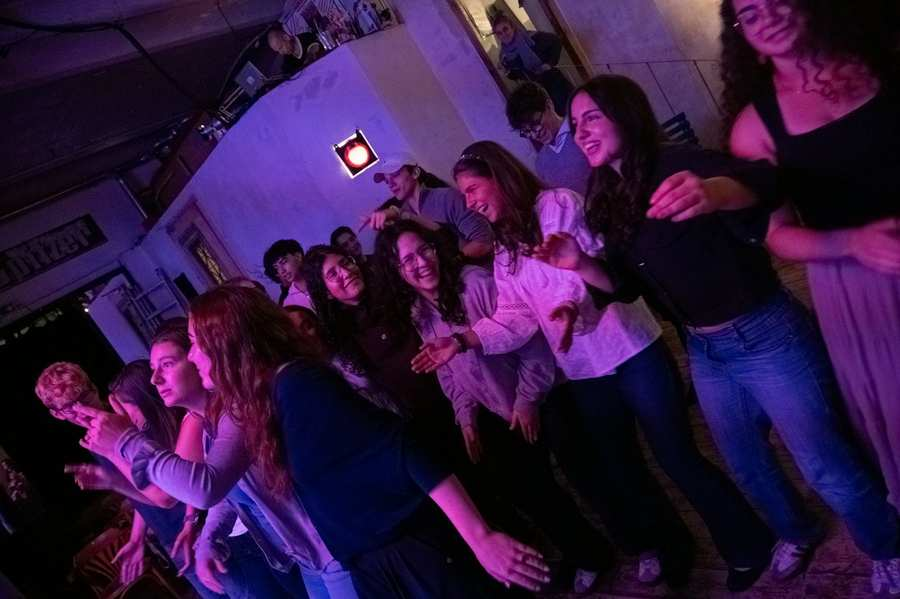
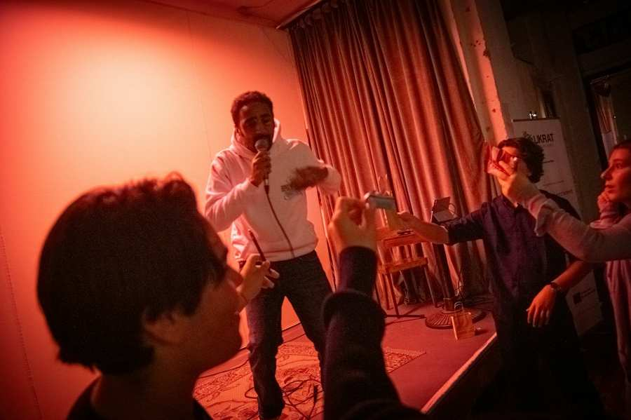

IKG/Kanfer
Mehr als 160 Begegnungen, unzählige Gespräche und viele persönliche Geschichten: Zwischen Jänner und September 2026 waren Likratinas und Likratinos bereits in mehr als 160 Begegnungen im Einsatz. Sie gingen in Schulklassen und zu unterschiedlichen Gruppen, erzählten aus ihrem Leben, beantworteten Fragen und schufen Raum für persönliche Begegnung, Austausch und gegenseitiges Kennenlernen.
Diese vielen Begegnungen sind ein besonderer Grund zum Feiern – und genau darum ging es auch bei der diesjährigen Likrat Party am 17. September 2026. Gemeinsam kamen Likratinas, Likratinos und das Likrat-Team zusammen, um auf die vergangenen Monate zurückzublicken und vor allem eines zu sagen: Danke!
Bei gutem Essen, spannenden Gesprächen und einem abwechslungsreichen Programm war für beste Stimmung gesorgt. Ein besonderes Highlight war der Auftritt eines Rappers, der mit seiner Musik ordentlich Energie in den Abend brachte und für Unterhaltung sorgte.
Auch das Likrat-Team stand an diesem Abend selbst im Mittelpunkt – und zwar auf etwas andere Weise: Bei einem Quiz wurden die einzelnen Teammitglieder persönlich vorgestellt. Zu jeder Person gab es drei Aussagen, von denen nur eine wahr war. Die Gäste mussten erraten, welche Geschichte tatsächlich stimmte. Dabei kamen so manche überraschende und persönliche Geschichten ans Licht – und es gab viel zu lachen. So konnten die Likratinas und Likratinos das Team hinter Likrat noch einmal von einer ganz anderen Seite kennenlernen.
Hinter jeder der mehr als 160 Begegnungen stehen engagierte Likratinas und Likratinos, die ihre Zeit und persönlichen Erfahrungen einbringen, sich vorbereiten und mit viel Engagement den Dialog mitgestalten. Sie machen Begegnung möglich und tragen dazu bei, dass junge Menschen jüdisches Leben aus erster Hand kennenlernen und miteinander ins Gespräch kommen können.
Ohne ihren Einsatz wäre das Likrat-Programm nicht möglich. Die Likrat Party war deshalb mehr als ein gemeinsamer Abend: Sie war ein Dankeschön an alle Likratinas und Likratinos, die Likrat mit ihrem Engagement, ihren Geschichten und ihrer Persönlichkeit lebendig machen.
Danke für euren Einsatz – und auf viele weitere Begegnungen, Gespräche und gemeinsame Erlebnisse!








